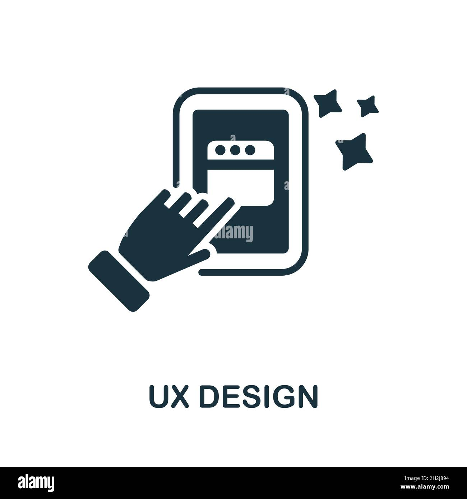

UX/UI Design
Sou designer especializado em UX/UI, com foco em criar experiências digitais intuitivas e funcionais. Meu trabalho é centrado no usuário, buscando sempre soluções simples e eficazes que atendam às suas necessidades. Aqui, você encontrará uma seleção dos meus projetos, que refletem meu compromisso com a usabilidade e o design de qualidade.
- gustavo.r.lima6@aluno.senai.br
- Av. Dr. Renato de Andrade Maia, 601
- Guarulhos - SP

- 
UX Design
UX Design envolve entender as necessidades e comportamentos dos usuários, criando soluções que sejam funcionais e intuitivas. O objetivo é facilitar a interação, garantindo uma experiência positiva e sem frustrações.
UI Design
UI (User Interface) Design é o processo de criar a interface visual de um produto, como botões, ícones e layouts. Foca na estética, na organização e na interação visual, garantindo que a interface seja atraente e fácil de usar.